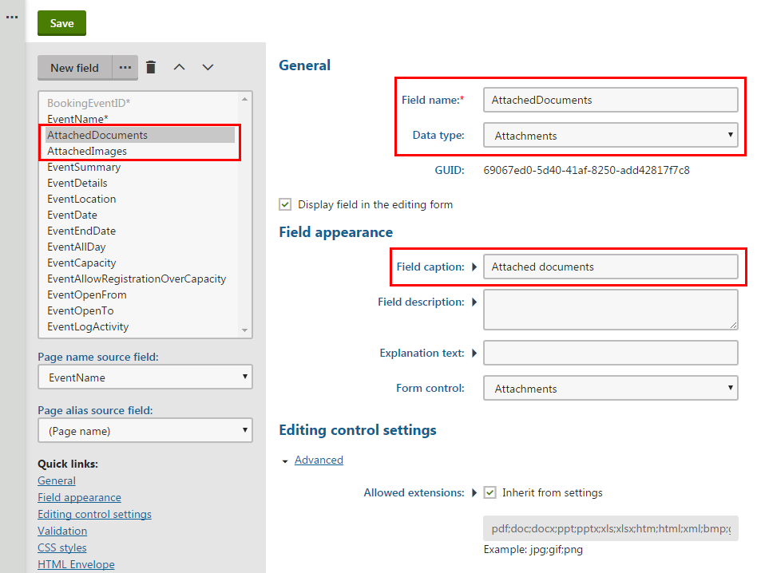
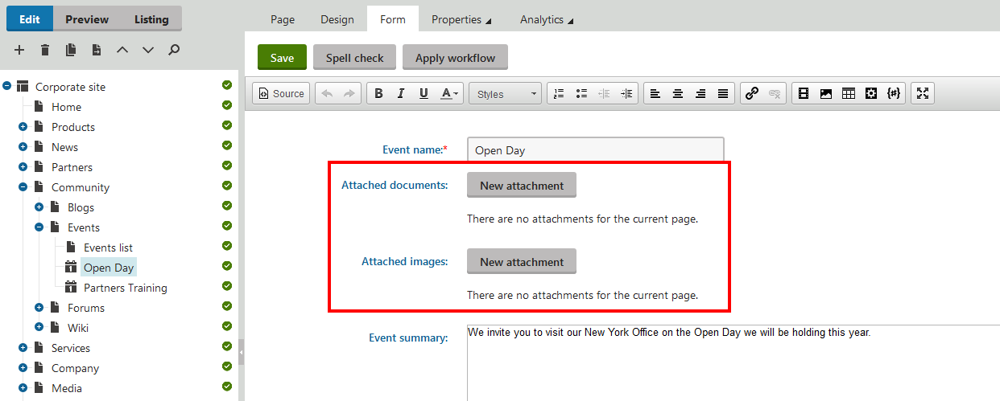

Creating grouped page attachments
If you want files to be associated with a particular page, there are two types of page attachments:
unsorted attachments that you can set on a page, on the Properties -> Attachments tab, and
grouped attachments by defining fields for a page type and then uploading files to the fields.
Grouped page attachments are a more complex way of attaching files to pages in situations when you want more groups of attachments. First, create attachment fields in the page type of the required page; then second, add a web part that will display the files on the page.
Creating basic attachment fields
Open the Page types application.
Create a new page type, or Edit (
 ) an existing one.
) an existing one.If you are creating a new page type, stop at step 3 – Fields. If you are editing an existing page type, switch to the Fields tab.
Click New field.
Type a Field name.
In Data type, select Attachments.
The system then automatically selects Attachments control in Form control.
Type a Field caption. This is the label of the field.
Click Save.
(Optional) Repeat steps 4–8 to add more attachment fields.
If you are creating a new page type, finish the creating process.
The system saves the fields. The attachment fields are on pages using the specified page type. See all options to learn all settings of attachment fields. Don't forget that you need to add a web part to display the files.
Displaying attached files with a web part
Open the Pages application.
If the page where the attachment will be displayed uses its own template, navigate to the page. Otherwise, navigate to the closest parent page with its own template.
Switch to the Design tab.
Place a new Page attachments web part to a web part zone.
Unwrap the Visibility category and in the Show for page types field select the page types of the pages on which you want the web part to be visible.
In the Content category, specify the path to the page holding the attachments in the Path field.
In Attachment group, select the page type you created in the previous steps. In the second field of Attachment group, select the name of the field with files you created in the previous steps.
(Optional) In Content before or Content after, you can type an HTML code that is before or after the displayed attachments, for example:
<h2>Attached documents</h2>Click Save & Close.
The system saves the web part on the page. If a user uploads a file in the Form tab now, the page will display the file.
Example
The example shows how to create a grouped page attachment on a page. The example uses the sample Corporate site.
First, we want to create two separate attachment fields on a page, and then second, we want to display attachments on the page.
Creating attachment fields
We want to add documents and images separately to the Open Day page that uses the CMS.BookingEvent page type.
Open the Page types application.
Edit (
) the CMS.BookingEvent page type.Switch to the Fields tab.
Create two new fields:
Click New field.
Type AttachedDocuments to Field name.
Select Attachments in Data type.
Type Attached documents to Field caption.
Click Save.
Click New field.
Type AttachedImages to Field name.
Select Attachments in Data type.
Type Attached images to Field caption.
Click Save.

Creating new fields
The system saves the fields. Then, you can check the Open Day page to see the fields you just added.
Open the Pages application.
Navigate to Community -> Events -> Open Day.
Switch to the Form tab.

Seeing the just added fields on the page
Now, you see the two fields that you just added to the page type.
Displaying attachments on the page
We want the files to be displayed on the Open Day page.
In Pages application, navigate to the Events page, since Events is the closest parent page with its own template.
Switch to the Design tab.
Display Attached Documents.
Right-click the orange web part zone header, and click Add new web part.
Select Page attachments, and click Select to add the web part and to open the Web part properties dialog.
Unwrap the Visibility category and in the Show for page types field select Event (booking system) (CMS.BookingEvent).
In the Content category, specify the path to the page holding the attachments in the Path field.
In Attachment group, select again Event (booking system) (CMS.BookingEvent). In the second field of Attachment group, select Attached Documents.
In Content before, type:
<h2>Attached documents</h2>Click Save & Close.
Display Attached Images.
Right-click the orange web part zone header, and click Add new web part.
Select Page attachments, and click Select to add the web part and to open the Web part properties dialog.
Unwrap the Visibility category and in the Show for page types field select Event (booking system) (CMS.BookingEvent).
In the Content category, specify the path to the page holding the attachments in the Path field.
In Attachment group, select again Event (booking system) (CMS.BookingEvent). In the second field of Attachment group, select Attached Images.
In Content before, type:
<h2>Attached images</h2>Click Save & Close.
The system saves the web part on the page. If someone uploads a file on the Form tab of the Open Day page, the page will display the files – attached documents and attached images.
Reference – Editing control settings category in editing a Page type field
When you edit a specific page type in the Page type application, select a specific field on the Fields tab. If you select Attachments in Field name, the system automatically selects Attachments control in Form control, and the Editing control settings category appears. All options from the category is in the following reference.
Some of the options are displayed after you click Advanced.
|
Name |
Description |
|
Allow change order |
If selected, the order of attachments can be changed. |
|
Paging |
If selected, paging is used for the list of attachments. |
|
Page size |
Define the page size options that are selectable in the attachments paging. Values must be separated by commas. For example, 25,50,100,##ALL## where ##ALL## means an option for displaying all attachments on one page. Page size is valid only when Paging is selected. |
|
Default page size |
Define the amount of attachments displayed per page by default. Default page size is valid only when Paging is selected. |
|
Allowed extensions |
Define which file extensions are allowed to be uploaded as attachments. Select Inherit from settings to use the values specified in Settings -> System -> Files. Clear Inherit from settings to set own file extentions separated by semicolons, e.g., jpg;gif;png. |
|
Automatic image resize on upload |
|
|
Resize |
Define whether the system resizes uploaded images or not. Select:
|
|
Width (px) |
Images will be resized so that width matches the entered value. The aspect ratio will not be kept. Width (px) is enabled only when you select (use custom settings) in Resize. |
|
Height (px) |
Images will be resized so that height matches the entered value. The aspect ratio will not be kept. Height (px) is enabled only when you select (use custom settings) in Resize. |
|
Max side size (px) |
If one of the sides of the image is larger than this value, the image will be resized so that the larger side matches the entered value. The aspect ratio is kept, and Width (px) and Height (px) are not applied. Max side size (px) is enabled only when you select (use custom settings) in Resize. |